Shoniz Chocolate
Website redesign for a non-profit company


Shoniz Chocolate
Our 4-member team has undertaken a voluntary project to improve the UX and UI of the newly launched website for Shoniz Chocolate, a well-established company specializing in wholesale and retail chocolate sales. The website now offers partial purchase options for both regular customers and provincial representatives, making it more user-friendly and accessible for all.
Project Overview

Problem
lack of online payment options, absence of a concise summary, and insufficient product details.
These issues hinder user convenience, understanding, and timely access to important information.
The issues collectively present a significant barrier to product adoption and effective use.
Goals
We aim to better understand prospective users and their needs so that we can provide:
Smooth and convenient navigation
Ability to filter and compare
Present carpet-related services in a better way
Challenges
Inability to communicate with the stakeholder
Finding customers who directly purchase products from Shoniz's website online
Lack of an online payment gateway
Finding a way to address the reason for the lack of online payment.
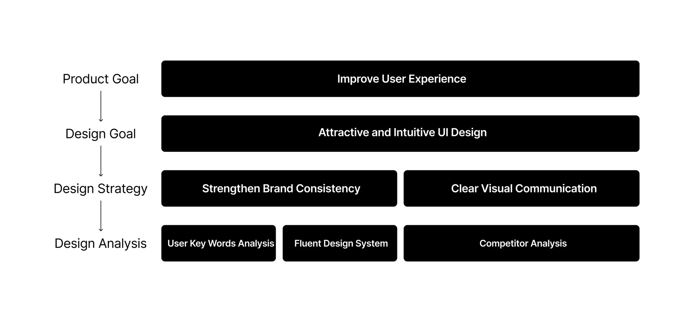
My Design Process
My team of 4 ran a double Diamond method based on the Design Thinking Methodology. It was not a linear path, we bounced between stages as the project progressed.
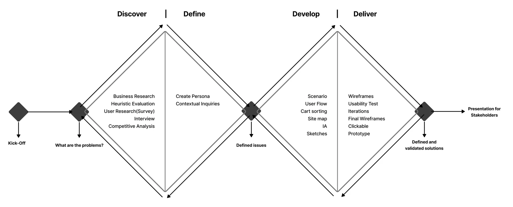
Discover
We conducted our research in three phases:
Phase 1: Heuristic Evaluation
Phase 2: Survey and Interview
Phase 3: Competitive Analysis
Heuristic Evaluation
To get a better understanding of what issues to focus on, all four members of our team performed a heuristic evaluation of Shoniz and another websites.
The following are a few results of our investigation.
What did we find?
1. The presence of large product images on the homepage (under the catalog section)
2. Overcrowded and confusing magazine-like images that occupy a lot of space on the page and create confusion for the user
3. A cluttered and lengthy navigation bar with ineffective announcements (even if one of the issues mentioned in the announcement is important)
4. The presence of the "More Information" title next to the display details instead of "Out of Stock"!
5. Placing orders without final user confirmation and the absence of online payment option.
6. Incomplete and confusing product descriptions on the product details page
7. Random categorization and unclear titles that do not change the product categorization
8. Not displaying out-of-stock products at first glance
9. Incorrect announcements.
What can we do?
1. Designing a good information architecture that provides a seamless experience
2. Keeping the hero static will help avoid disturbing the balance or showing an unsuitable image in the hero area
3. Make membership and more detail CTA visible and easy to find
4. Creating effective and user-friendly filtering.
5. Displaying important announcements effectively and writing product details accurately and clearly.
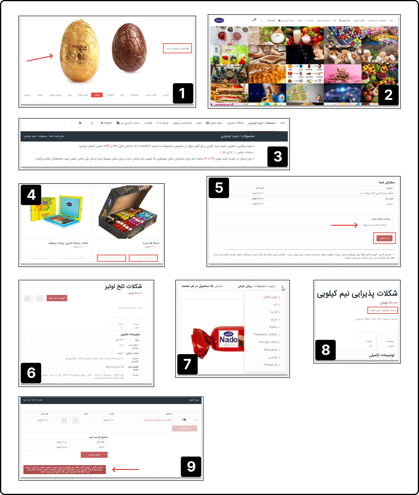
Survey
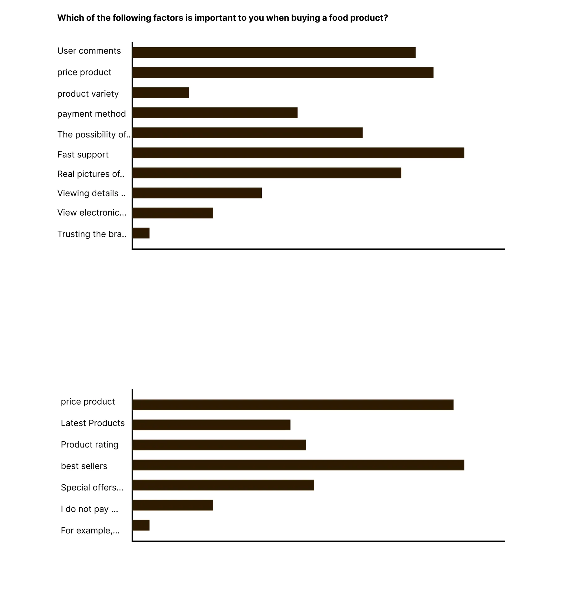
We started designing a survey for user research, and from the results obtained from approximately 150 users who completed 15 open-ended questions in the survey, we obtained the following results:
1. Question: Which of the following factors is important to you when buying a food product?
Results: About 50% of users give importance to user reviews, product price, and details.
About 42% of users give importance to quick support, online and secure payment options.
About 60% of users mentioned product variety and categorization.
2. Question: Which of the following filtering options is more important?
Results: 50% of users mentioned "bestsellers"
46% of users mentioned "price"
37% of users mentioned "special offers"
24% of users mentioned "product rating"
3. Question: Which payment method do you prefer?
Results: 68% of users mentioned online payment"
Interview
Interviews
During the ideation phase of the project, I conducted user interviews to build new personas and to inform the design. Together with the team, we prepared an interview script with 32 open-ended questions, focusing on our target audiences’ values, motivations, and daily routines. In 4 days, I recruited and interviewed 7 users remotely. We referenced the user interview findings throughout the entire design process.
What objectives influenced your questions?
How many users did you interview?
What were the main insights from the interviews?
How did you use your findings?
Define
We conducted our define and ideate step in three phases:
Phase 1: User Jouney Map
Phase 2: Open card Sorting
Phase 3: Information Architecture by Sitemap
User Journey Map
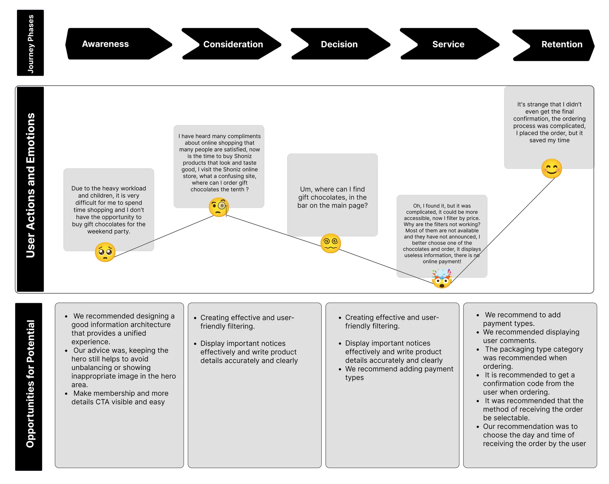
Persona
Who is the user of the IAB website?
The website will be redesigned based on the persona’s needs and preferences.
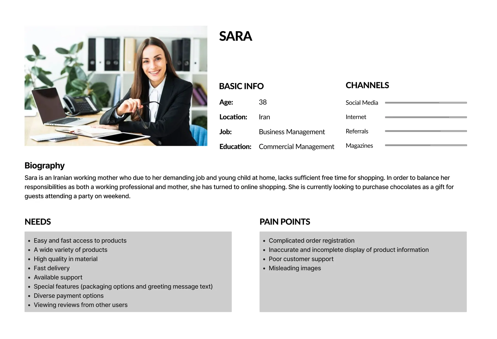
Card Sorting
How do users think the website should be organized?
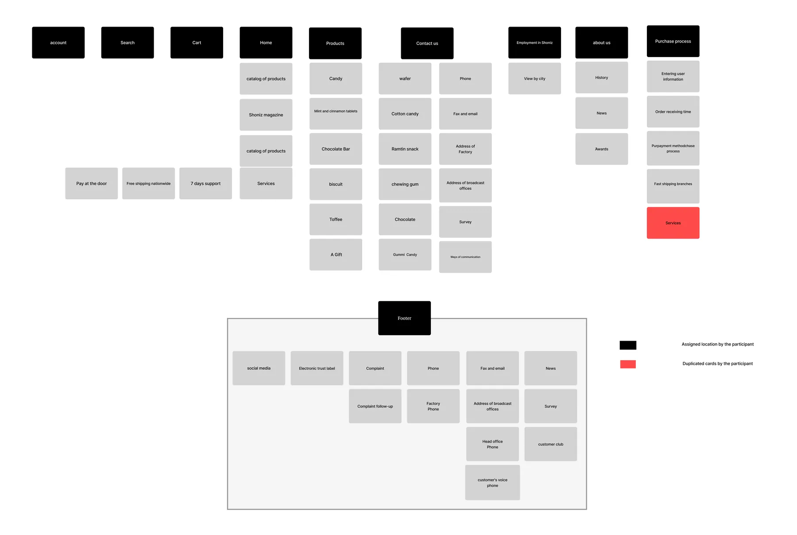
Sitemap
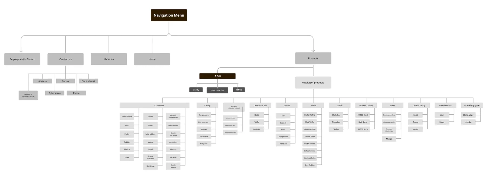
Develop
Usability and Iteration (Phase 1)
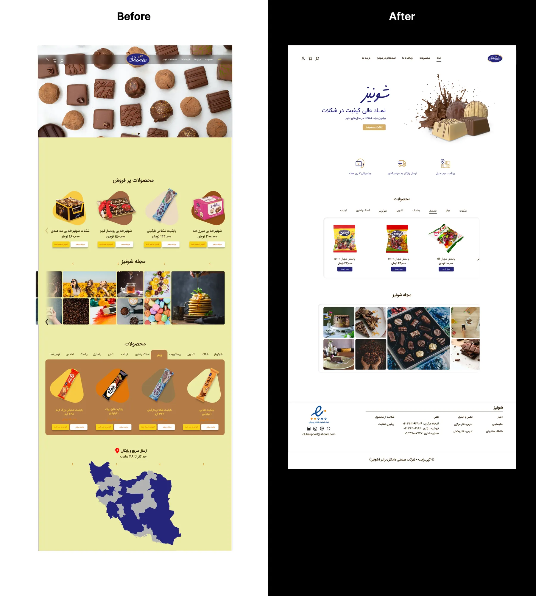
The initial design was cluttered with poor colors, bad images, and weak UX.
Our value propositions and differentiators were not clearly displayed on the homepage.
Product variety was not at the top; only bestsellers were shown first, followed by the magazine. This layout should prioritize product variety for easier access.
The Shoniz magazine initially showcased products, not aligning with user expectations.
Quick delivery options, a crucial feature, were placed at the bottom, reducing their impact.
Navigation items needed rearrangement to better align with target audience priorities.
The "More Details" option next to products was redundant, as clicking the product reveals details.
Usability and Iteration (Phase 2)
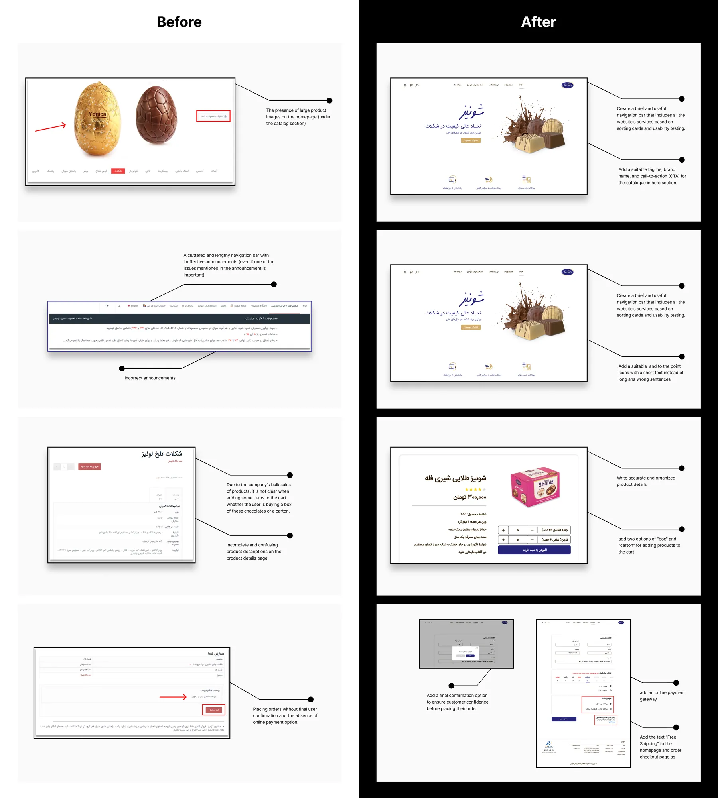
Deliver
High Fidelity Design
Finding a suitable UI design for the Shoniz website
The color palette we created was inspired by company branding and we can't change them. Blue and Gold are this brand's colors.
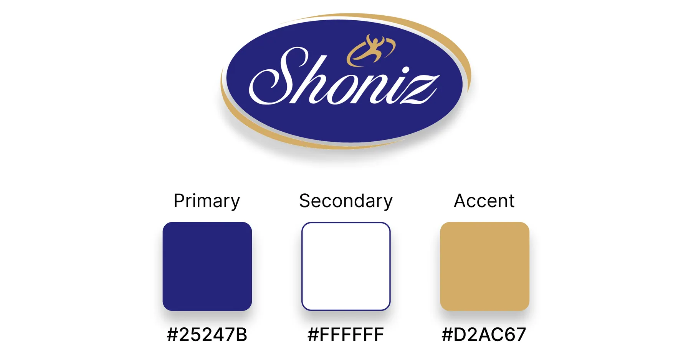
Shoniz brand & Color pallete
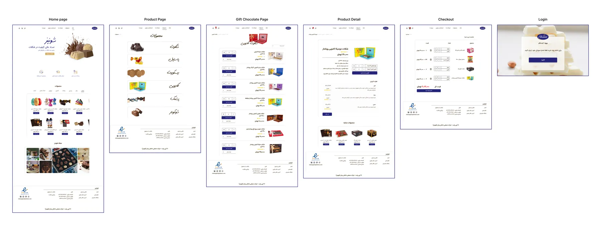
Reflections
What did I learn?
Making a good balance of users' needs and the stakeholder's marketing strategy in mind while designing
Effective communication with team members and leading challenging situations
What can we do next?
Evaluating the current design and testing it with elderly users to check accessibility
Thank you for reading my case study!
Want to work with me? Feel free to contact me!
or just say hello on my social media....
Read more of my case studies


TravlMate
An AI-powered travel super app and website, designed end-to-end to support users across every stage of their journey, currently preparing for release.


TruNorth
An AI-powered career coaching app guiding users toward the right career path, awarded 3rd place at the PM Accelerator bootcamp.


TherapEze
Application design for a non-profit company